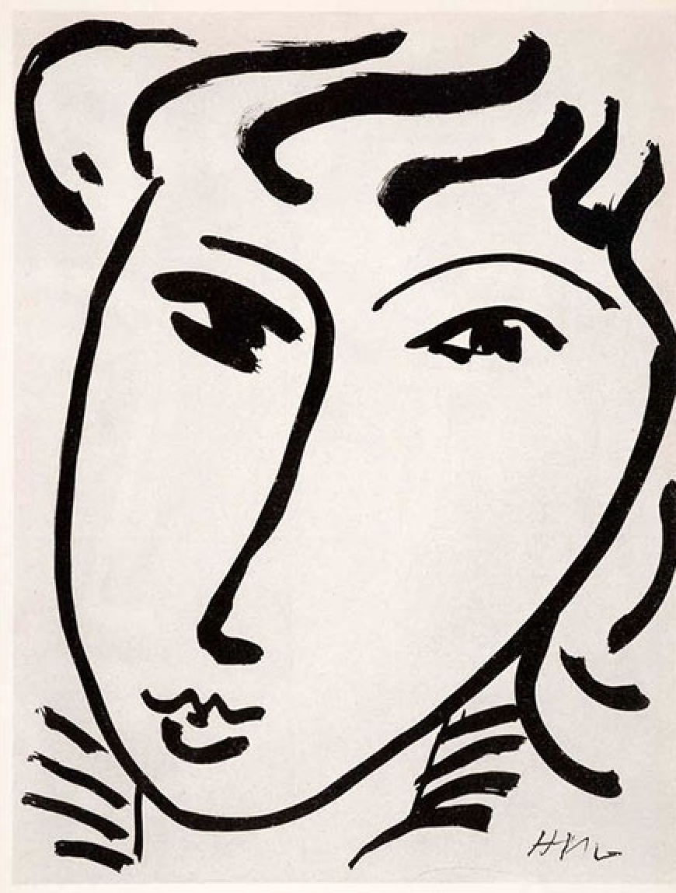

M A T I S S E
As Matisse once said,
"There are always flowers for those who want to see them."
About Matisse
Henri Émile Benoît Matisse was a French artist, known for his use of color. Matisse is commonly regarded as one of the artists who helped to define revolutionary developments in art in the twentieth century. The extensive and intense use of color in his works between 1900 and 1905 coined him as one of the Fauves, a group of French painters known as "wild beasts" for their strong colors and fierce brushstrokes.